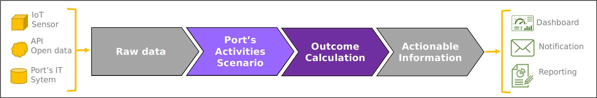

Overview
Concept of the PAS model
This model of the PIXEL platform aims to allows user to convert raw data into actionable information.
|  |
|---|
| Illustration of the basic operating principle of the PAS |
Firstly, the model build the Port's Activities Scenario (PAS). This mean to elucidate the required activities in port to handle cargoes in port (e.g. unload from vessel to warehouse storage). For each of the activities, the scenario precise what are the goods, when does it occurs and how (resources and process used).
 |
|---|
| The purpose of the PAS is to identify and schedule the activities required in the port to process cargoes |
Secondly, from the PAS can be calculate outcomes, likes energy consumption, pollutant emission, or area occupancy. From these primary metrics, secondary metrics could be derived, such as utilization rate, energy efficiency, or the existence of bottlenecks.
Uses of the PAS model
Considering a list of vessel-calls to handle, a set of port's parameters and several options (see Inputs section), the model aims to establish the required activities in port (among other see Outputs section). Depending on the type of data provided as input, four use can be proposed, as show in table X
| Input data | Use case |
|---|---|
| Live stream (e.g. IoT) | Monitoring |
| Consolidated historical (e.g. invoices & registers) | Assessment |
| Estimated future (e.g. predictive algorithms) | Forecast |
| « What if » scenario (e.g. change a machine, traffic evolution) | Explore |
Run the PAS model
Localy
The model can be run localy, considering it receives a proper model instance (see section OT call to the PAS model).
From python (requirements available in ./pipfile):
PAS_model.py --from_file "path/to/pas_instance.json"
From docker:
docker build -t pas_model -f ./DOCKERISE/Dockerfile .
docker run pas_model python3 PAS_model.py {mode_instance}
On pixel platform
The present section focus on the Operational Tools interface that need to be fulfilled in order to execute the PAS model. Through a json named model instance, the Operational Tool pass to the PAS model informations to retrieve its inputs and export its outputs (see OT documentation).
 |
|---|
| The OT interface to execute the PAS |
In the Input section, the user provides localization of the inputs in the Information Hub. That is to say an index and a document id. Default values are preset, but to use them, user have to actually store the input in those locations.
In the Output section, the user provide localization where the PAS model will export its results in the Information Hub. That is to say an index and a document id. Note that if a document with the same document id is already present in the index, it will be overwrite.
The Logging section is similar to the Output one, but dedicated to information about the PAS model run. Those outputs are more contextual informations than actual results.
The Forceinput allows to directly provide values for inputs, without having the corresponding documents in Information Hub. The provided values should mimic the json format of the corresponding documents (for a set of document, use an list of object like "value":[{doc 1 content}, {doc 2 content}].
Using distinct index and doc_id allows to run multiple PAS model in paralleled for distinct purpose (see section Uses), or even distinct version of the PAS model.